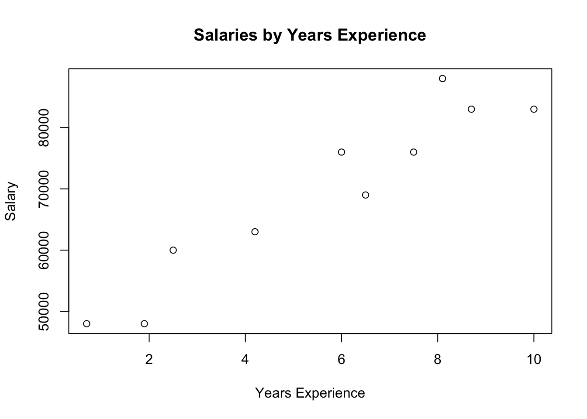
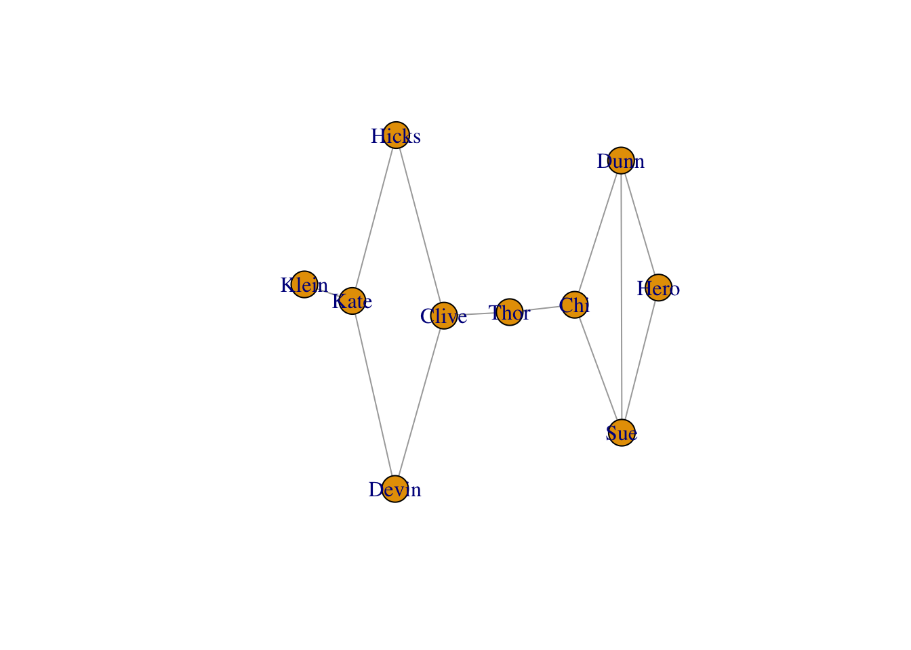
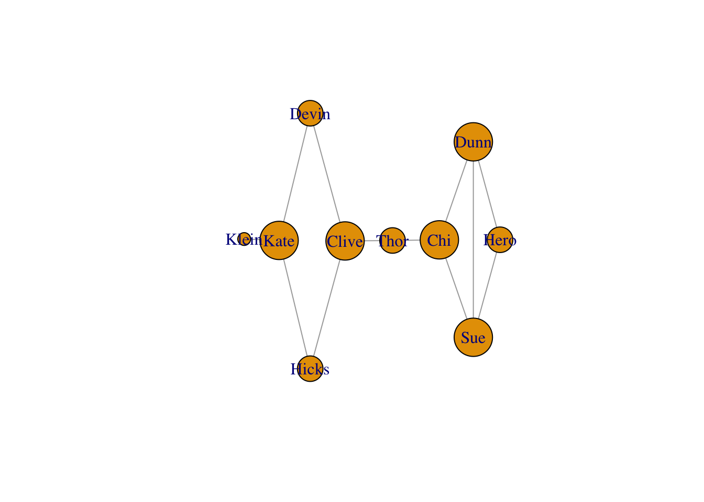
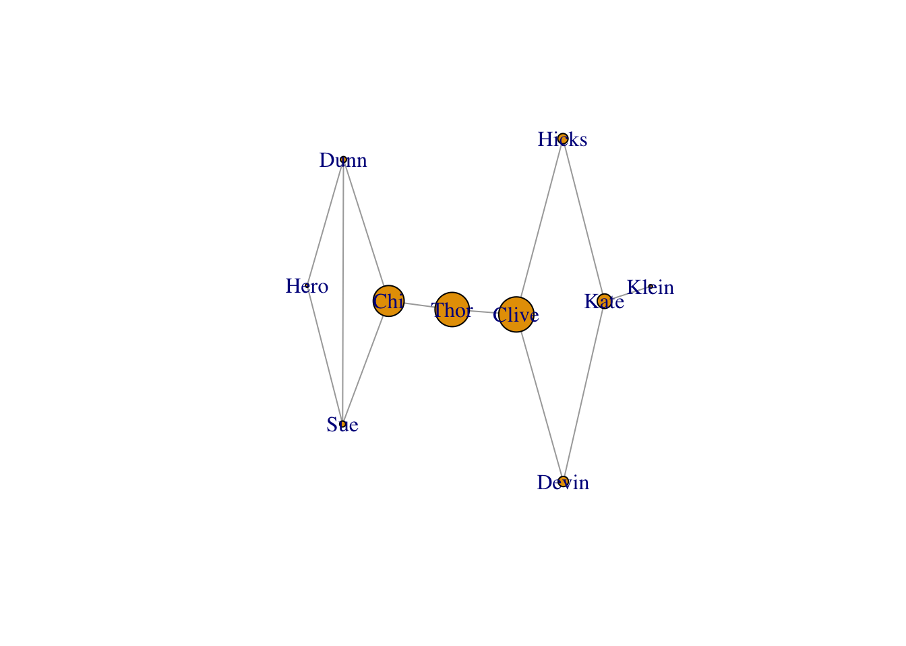

users = [
{ "id": 0, "name": "Hero" },
{ "id": 1, "name": "Dunn" },
{ "id": 2, "name": "Sue" },
{ "id": 3, "name": "Chi" },
{ "id": 4, "name": "Thor" },
{ "id": 5, "name": "Clive" },
{ "id": 6, "name": "Hicks" },
{ "id": 7, "name": "Devin" },
{ "id": 8, "name": "Kate" },
{ "id": 9, "name": "Klein" }
]Is the R vs Python debate still alive in 2025?
I’m not sure, but I was digging into an old tome by Joel Grus entitled Data Science from Scratch. It’s a great book, but reading through it this time reminded me of the old data science debate. Rather than wax philosophically on this topic, I’m going to translate the code from the book’s introduction and compare the two languages from there. It’s always best to work through examples.
Motivational Hypothetical: DataSciencester
DataSciencester is the social network for data scientists. Let’s do some data science.
Finding Key Connectors
First, we’re given a list of user data. Each item in the list is a dictionary. Each dictionary has an ID and a name.
Already, I’ve got some issues here. I don’t think this data structure makes sense. Why are we dealing with integer IDs at all? It can’t be for performance. We only have 10 users! Lets just use the string names directly.
users <- c("Hero", "Dunn", "Sue", "Chi", "Thor", "Clive", "Hicks", "Devin", "Kate", "Klein")Using a character vector makes the most sense to me here. We don’t want integers because mathematical operations don’t make sense here.
Next is the friendship data.
friendship_pairs = [(0, 1), (0, 2), (1, 2), (1, 3), (2, 3), (3, 4), (4, 5), (5, 6), (5, 7), (6, 8), (7, 8), (8, 9)]We’ve got a list of ID pairs. By the way, this data structure is called an edge list. In R, it makes more sense to represent this as a two column matrix.
edges <- c("Hero", "Dunn", "Hero", "Sue", "Dunn", "Sue", "Dunn", "Chi", "Sue", "Chi", "Chi", "Thor", "Thor", "Clive", "Clive", "Hicks", "Clive", "Devin", "Hicks", "Kate", "Devin", "Kate", "Kate", "Klein")
friendship_pairs <- matrix(
data = edges,
ncol = 2,
byrow = TRUE
)
friendship_pairs [,1] [,2]
[1,] "Hero" "Dunn"
[2,] "Hero" "Sue"
[3,] "Dunn" "Sue"
[4,] "Dunn" "Chi"
[5,] "Sue" "Chi"
[6,] "Chi" "Thor"
[7,] "Thor" "Clive"
[8,] "Clive" "Hicks"
[9,] "Clive" "Devin"
[10,] "Hicks" "Kate"
[11,] "Devin" "Kate"
[12,] "Kate" "Klein"I’ll praise Python for one thing so far: data structure literals. I don’t need to print friendship_pairs in the Python code because that would just print out the actual code itself. Reminds me of Lisp. That’s good.
But let me dote on my first love R too. Common data structures like matrices are build right in. No import numpy as np required.
Moving on, the author expertly points out that a list of pairs is not the best way to work with the data. Neither is a matrix really. Let’s transform the data.
# Initialize the dict with an empty list for each user id:
friendships = {user["id"]: [] for user in users}
# And loop over the friendship pairs to populate it:
for i, j in friendship_pairs:
friendships[i].append(j) # Add j as a friend of user i
friendships[j].append(i) # Add i as a friend of user j
print(friendships){0: [1, 2], 1: [0, 2, 3], 2: [0, 1, 3], 3: [1, 2, 4], 4: [3, 5], 5: [4, 6, 7], 6: [5, 8], 7: [5, 8], 8: [6, 7, 9], 9: [8]}The author chose a dictionary here for its fast look-ups. I agree. In R, the equivalent data structure is a list.
compute_friendships <- function(user) {
c(
friendship_pairs[, 1][friendship_pairs[, 2] == user],
friendship_pairs[, 2][friendship_pairs[, 1] == user]
)
}
friendships <- lapply(users, compute_friendships)
names(friendships) <- users
friendships$Hero
[1] "Dunn" "Sue"
$Dunn
[1] "Hero" "Sue" "Chi"
$Sue
[1] "Hero" "Dunn" "Chi"
$Chi
[1] "Dunn" "Sue" "Thor"
$Thor
[1] "Chi" "Clive"
$Clive
[1] "Thor" "Hicks" "Devin"
$Hicks
[1] "Clive" "Kate"
$Devin
[1] "Clive" "Kate"
$Kate
[1] "Hicks" "Devin" "Klein"
$Klein
[1] "Kate"We don’t like for-loops in R. The apply() family of functions are much better. The next question is “What’s the average number of connections?”
def number_of_friends(user):
"""How many friends does _user_ have?"""
user_id = user["id"]
friend_ids = friendships[user_id]
return len(friend_ids)
total_connections = sum(number_of_friends(user)
for user in users) # 24
assert total_connections == 24
num_users = len(users) # length of the users list
avg_connections = total_connections / num_users # 24 / 10 == 2.4
assert num_users == 10
assert avg_connections == 2.4This is a one-liner in R.
mean(lengths(friendships))[1] 2.4Next, we want sort from most to least friends.
# Create a list (user_id, number_of_friends).
num_friends_by_id = [(user["id"], number_of_friends(user))
for user in users]
num_friends_by_id.sort( # Sort the list
key=lambda id_and_friends: id_and_friends[1], # by num_friends
reverse=True) # largest to smallest
# Each pair is (user_id, num_friends):
# [(1, 3), (2, 3), (3, 3), (5, 3), (8, 3),
# (0, 2), (4, 2), (6, 2), (7, 2), (9, 1)]
assert num_friends_by_id[0][1] == 3 # several people have 3 friends
assert num_friends_by_id[-1] == (9, 1) # user 9 has only 1 friendYet another one-liner in R.
sort(lengths(friendships), decreasing = TRUE) Dunn Sue Chi Clive Kate Hero Thor Hicks Devin Klein
3 3 3 3 3 2 2 2 2 1 Data Scientists You May Know
The next section is basically meanders a bit, so I’ll skip the bad friend-of-a-friend implementation and go straight to the correct one.
from collections import Counter # not loaded by default
def friends_of_friends(user):
user_id = user["id"]
return Counter(
foaf_id
for friend_id in friendships[user_id] # For each of my friends,
for foaf_id in friendships[friend_id] # find their friends
if foaf_id != user_id # who aren't me
and foaf_id not in friendships[user_id] # and aren't my friends.
)
assert friends_of_friends(users[3]) == Counter({0: 2, 5: 1})This one is bit more tricky in R, but it helps to break it down case by case.
friends_of_friends <- function(user) {
users_friends <- friendships[[user]]
friendships[names(friendships) %in% users_friends] |>
lapply(\(friends_list) setdiff(friends_list, user)) |>
lapply(\(friends_list) setdiff(friends_list, users_friends)) |>
unlist() |>
table() |>
sort(decreasing = TRUE)
}
friends_of_friends("Chi")
Hero Clive
2 1 It’s easy to extract a parts of many objects in R using single brackets and %in% to match names. From there, a combination of lapply() and setdiff() make it easy to remove the user from the list as well as the user’s direct friends. Next, unlist() is a mostly reliable way to reduce a list down to a vector. Finally, table() and sort() get us to our final result. By the way, I don’t like the function name friends_of_friends(). I think something like n_mutual_friends() would be more clear.
I’m going to skip the next part about users’ interests. It doesn’t really go anywhere.
Salaries and Experience
Next we’re given some anonymous data on salaries (in dollars) and tenures (in years).
salaries_and_tenures = [(83000, 8.7), (88000, 8.1),
(48000, 0.7), (76000, 6),
(69000, 6.5), (76000, 7.5),
(60000, 2.5), (83000, 10),
(48000, 1.9), (63000, 4.2)]Again, data structures are everything here. This is a clear case for a data frame for me.
salaries_and_tenures <- data.frame(
salary = c(83000, 88000, 48000, 76000, 69000, 76000, 60000, 83000, 48000, 63000),
tenure = c(8.7, 8.1, 0.7, 6, 6.5, 7.5, 2.5, 10, 1.9, 4.2)
)
salaries_and_tenures salary tenure
1 83000 8.7
2 88000 8.1
3 48000 0.7
4 76000 6.0
5 69000 6.5
6 76000 7.5
7 60000 2.5
8 83000 10.0
9 48000 1.9
10 63000 4.2Column names are so nice to have here. Sure, a two-column matrix would work too, but I prefer matrices to contain homogeneous data within. Salary and tenure are measured in different units, which makes a data frame preferred for me.
Next, the author includes a plot, but with no code. I get it. He doesn’t want introduce Matplotlib yet, but in R we get plots built right in.
plot(
salary ~ tenure,
data = salaries_and_tenures,
main = "Salaries by Years Experience",
xlab = "Years Experience",
ylab = "Salary"
)
Skipping the erroneous average salary by tenure piece, we move on to bucketing tenure.
from collections import defaultdict
def tenure_bucket(tenure):
if tenure < 2:
return "less than two"
elif tenure < 5:
return "between two and five"
else:
return "more than five"
# Keys are tenure buckets, values are lists of salaries for that bucket.
salary_by_tenure_bucket = defaultdict(list)
for salary, tenure in salaries_and_tenures:
bucket = tenure_bucket(tenure)
salary_by_tenure_bucket[bucket].append(salary)
# Keys are tenure buckets, values are average salary for that bucket
average_salary_by_bucket = {
tenure_bucket: sum(salaries) / len(salaries)
for tenure_bucket, salaries in salary_by_tenure_bucket.items()
}
assert average_salary_by_bucket == {
'between two and five': 61500.0,
'less than two': 48000.0,
'more than five': 79166.66666666667
}This is another win for R, which contains a built-in function called cut() for this. Even better, R contains a default data type for this called a factor, which is similar to an enum in other programming languages, except factors are integer vectors under the hood.
salaries_and_tenures$tenure_bucket <- cut(
x = salaries_and_tenures$tenure,
breaks = c(0, 2, 5, Inf),
labels = c("less than two", "between two and five", "more than five"),
right = FALSE,
ordered_result = TRUE
)
aggregate(salary ~ tenure_bucket, data = salaries_and_tenures, mean) tenure_bucket salary
1 less than two 48000.00
2 between two and five 61500.00
3 more than five 79166.67Also, aggregate() is super powerful, if complicated. I’m going to skip the rest of the examples, since they aren’t that interesting.
Diversion: igraph
Going back to the first section on the DataSciencester social network, it strikes me that there is a better tool this analysis: igraph. It’s a collection of network analysis tools implemented in C with bindings Mathematica, Python, and R. Since the R bindings for igraph were developed first (and I’m biased towards R), we’ll use that version.
library(igraph)
Attaching package: 'igraph'The following objects are masked from 'package:stats':
decompose, spectrumThe following object is masked from 'package:base':
uniong <- make_graph(edges = edges, directed = FALSE)
plot(g)
We can size each vertex according to degree.
V(g)$size <- degree(g) * 10
plot(g, vertex.size = V(g)$size)
But actually betweenness tells more of the story for this graph.
V(g)$size <- betweenness(g)
plot(g, vertex.size = V(g)$size)
Conclusion
The Zen of Python will tell you that Python is “batteries included.” I’m here to tell you that R is “batteries included” for data science. R has built-in data frames and matrices. It has plotting built right in too, and you know I love that given this site’s name. It’s vectorized from the start and comes with lots of handy functional programming tools like apply() and the gang. And we didn’t even fit a statistical model. Those are built right in too. So do I need to write Data Science from Scratch in R or what?